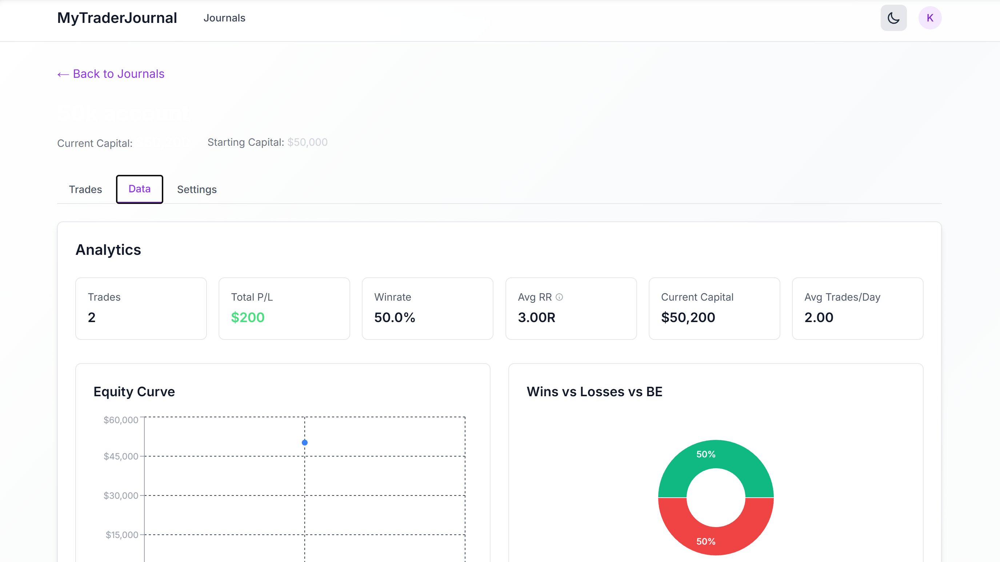

Zurück zu Projekten
Trading-Journal & Analytics
MyTraderJournal
Nach mehreren Jahren aktivem Trading habe ich kein Tool gefunden, das meine Strategien und Trades zuverlässig auswertet und in klaren Statistiken und Kennzahlen darstellt. Also habe ich MyTraderJournal entwickelt. Zusätzlich lassen sich Gedanken und Entscheidungsprozesse während des Tradings wie in einem Tagebuch festhalten, um die eigene Strategie laufend zu reflektieren und zu verbessern.
React
TypeScript
Tailwind CSS
Next.js
NextAuth
PostgreSQL
Einblicke

